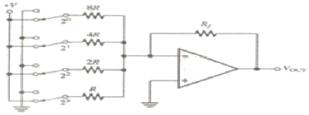
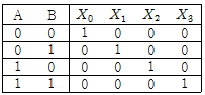
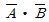
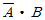
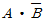
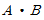
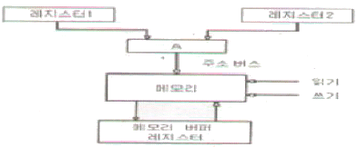
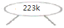
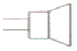

전자캐드기능사 (2010-03-28 기출문제)
1과목: 전기전자공학(대략구분)
1. 집적회로(IC)의 특징으로 적합하지 않은 것은?
- 경제적
- 소형경량
- 고 신뢰도
- 대전력용으로 주로 사용
(정답률: 81%)

2. A급 트랜지스터 증폭기가 이용하는 동작영역은?
- 활성영역
- 포화영역
- 차단영역
- 포화영역 + 차단영역
(정답률: 62%)
3. 10[H]의 코일에 1[A]의 전류를 흘릴 때 코일에 저장되는 에너지는?
- 5[J]
- 10[J]
- 20[J]
- 50[J]
(정답률: 48%)
4. 부궤환 증폭기의 특징이 아닌 것은?
- 대역폭 증대
- 일그러짐 감소
- 전력 효율 개선
- 주파수 특성 개선
(정답률: 36%)
5. BJT와 비교한 FET에 대한 설명으로 틀린 것은?
- 입력임피던스가 높다.
- 이득대역폭 적이 크다.
- 잡음특성이 양호하다.
- 온도변화에 따른 안정성이 높다.
(정답률: 52%)
6. 전력이 10[kW]인 반송파를 변조도 60[%]로 AM 변조 했을 때 피변조파의 전력은?
- 10[kW]
- 11.8[kW]
- 13.2[kW]
- 14.6[kW]
(정답률: 52%)
7. 어떤 증폭회로에서 입력전압이 10[mV]일 때 출력전압이 1[V]이었다면 전압이득은?
- 10[dB]
- 20[dB]
- 40[dB]
- 60[dB]
(정답률: 37%)
8. 어떤 저항에서 0.8[kWh]의 전력량을 소비시켰을 때 발생하는 열량은?
- 약 350[kcal]
- 약 520[kcal]
- 약 690[kcal]
- 약 850[kcal]
(정답률: 48%)
9. R-L-C 직렬회로에서 저항이 50[Ω], 유도성 리액턴스가 25[Ω], 용량성 리액턴스가 25[Ω]일 때 합성 임피던스는?
- 0[Ω]
- 25[Ω]
- 50[Ω]
- 75[Ω]
(정답률: 60%)
10. 다음과 같은 연산증폭기 회로의 명칭은?

- 가산기
- 적분기
- A/D 변환기
- D/A 변환기
(정답률: 45%)
11. 기본파의 전압이 100[V], 제2 고조파의 전압이 4[V], 제3 고조파의 전압이 3[V]일 때 왜율은?
- 5[%]
- 10[%]
- 25[%]
- 50[%]
(정답률: 32%)
12. 정격전압 220[V], 800[W]의 전열기에 100[V]의 전압을 가하였을 때 소비되는 전력은?
- 800[W]
- 400[W]
- 200[W]
- 100[W]
(정답률: 37%)
13. 100[Ω]의 저항 10개를 직렬로 접속할 때 합성저항은 병렬로 접속 할 때의 몇 배인가?
- 10배
- 20배
- 100배
- 1000배
(정답률: 64%)
14. 저항 3[kΩ]에 30[V]를 인가할 때 흐르는 전류는?
- 1[mA]
- 5[mA]
- 10[mA]
- 20[mA]
(정답률: 76%)
15. P형 반도체를 만드는 불순물 원소에 속하지 않는 것은?
- As
- B
- Al
- Ga
(정답률: 64%)
2과목: 전자계산기일반(대략구분)
16. 다음은 2 × 4 해독기의 진리표이다. X2 의 값은? (단, A, B는 입력이다.)





(정답률: 57%)
17. 흐름도(flow chart)에 나타내는 것이 아닌 것은?
- 각종 연산 및 처리 기능 표시
- 데이터 입력 및 출력 표시
- 여러 개의 경로 중 한 경로의 선택 표시
- 디스플레이 장치 표시
(정답률: 55%)
18. 전자계산기의 특징에 속하지 않는 것은?
- 신속한 처리 속도
- 창의성
- 정확성
- 신뢰성
(정답률: 86%)
19. 흐름도(flow chart)를 작성하는 이유가 아닌 것은?
- 코딩하기가 쉽다.
- 논리적인 체계를 쉽게 이해할 수 있다.
- 프로그램 흐름을 쉽게 파악하여 수정을 용이하게 한다.
- 계산기의 내부 동작 상태를 쉽게 알 수 있다.
(정답률: 59%)
20. 8비트로 부호와 절대값 방법으로 표현된 수 42를 한 비트씩 좌우측으로 산술 시프트 하면?
- 좌측 시프트 : 42, 우측 시프트 : 42
- 좌측 시프트 : 84, 우측 시프트 : 42
- 좌측 시프트 : 42, 우측 시프트 : 21
- 좌측 시프트 : 84, 우측 시프트 : 21
(정답률: 68%)
21. 다음 언어 중 컴파일러 언어에 해당하는 것은?
- BASIC
- LISP
- APL
- C
(정답률: 72%)
22. 주소 지정방식 중 명령어의 피연산자 부분에 데이터의 값을 저장하는 방식은?
- 즉시 주소지정 방식
- 절대 주소지정 방식
- 상대 주소지정 방식
- 간접 주소지정 방식
(정답률: 53%)
23. 10진수 0은 ASCII 코드 0110000로 표현된다. 10진수 8을 ASCII 코드로 옳게 표현한 것은?
- 0111000
- 0111001
- 0101000
- 0001000
(정답률: 47%)
24. 주기억 장치에 기억된 프로그램을 읽고 해독한 후, 각 장치에 지시신호를 전달함으로써 프로그램에서 지시한 동작이 실행되도록 하는 것은?
- 입력장치
- 출력장치
- 연산장치
- 제어장치
(정답률: 71%)
25. 메모리 내용을 보존하기 위해 일정 기간마다 재충전이 필요한 기억소자는?
- SRAM
- DRAM
- 마스트 RCM
- EPRCM
(정답률: 69%)
26. 다음 기억공간 관리 중 고정 분할 할당과 동적 분할 할당으로 나누어 관리되는 기법은?
- 연속로딩기법
- 분산로딩기법
- 페이징(paging)
- 세그먼트(segment)
(정답률: 30%)
27. 다음 그림은 주소 버스(address bus)를 이용한 메모리 전송을 나타낸 것이다. 그림에서 “A”가 나타내는 회로의 이름은?

- 디코더(decoder)
- 인코더(encoder)
- 멀티플렉서(multiplexer)
- 카운터(counter)
(정답률: 63%)
28. 세라믹 콘덴서에서 표면에 숫자 223의 용량은? (단, K는 허용오차 범위)

- 220[㎌]
- 22[㎌]
- 0.22[㎌]
- 0.022[㎌]
(정답률: 60%)
29. 다음 중 컴퍼스로 그리기 어려운 원호나 곡선을 그릴 때 사용되는 제도 기구는?
- T자
- 삼각자
- 운형자
- 축척자
(정답률: 80%)
30. 다음 중 화면을 선택하여 확대해 볼 수 있는 기능은?
- Zoom in
- Zoom out
- View all
- View zoom
(정답률: 85%)
3과목: 전자제도(CAD) 이론(대략구분)
31. 다음 콘덴서 중에서 (+), (-)극성이 있어서 회로 연결시 주의해야 하는 것은?
- 세라믹 콘덴서
- 마이카 콘덴서
- 마일러 콘덴서
- 전해 콘덴서
(정답률: 80%)
32. 다음 인쇄회로기관(PCB) 중 적층형태에 따른 분류가 아닌 것은?
- 단면 인쇄회로기관
- 양면 인쇄회로기관
- 스루홀 인쇄회로기관
- 다층 인쇄회로기관
(정답률: 68%)
33. CAD 시스템에서 사용되는 좌표 중 거리와 각도로 위치를 나타내는 좌표계는?
- 절대 좌표계
- 상대 좌표계
- 극 좌표계
- 사용자 좌표계
(정답률: 63%)
34. X-Y 플로터 등에서 처리 속도가 느린 주변기기와 컴퓨터 시스템의 중간에서 시스템의 효율을 높일 수 있는 것은?
- 중간 증폭
- 데이터 버퍼
- 마우스
- 연산 장치
(정답률: 73%)
35. 제조가 완료된 PCB를 전기적, 광학적으로 검사하기 위한 과정은?
- CAD
- CAM
- CAE
- CAT
(정답률: 47%)
36. 다음 중 SMD(Surface Mount Device)타입의 패드를 Plane층, Inner 및 Bottom면에 연결해줄 때, 패드에서 일정 거리의 트랙을 끌고 나온 후 비아를 사용하여 타 Layer에 연결하여 주는 것은?
- 레이어
- 팬인
- 팬아웃
- 랜드
(정답률: 51%)
37. 인쇄회로기판의 기계적 특성에 속하지 않는 것은?
- 절연 저항
- 굽힘 강도
- 인장 강도
- 비틀림율
(정답률: 59%)
38. PCB 제조 공정에서 구리를 제거하기 위한 메칭액은?
- 염화나트륨
- 염화제이철
- 크롬황산
- 수산화나트륨
(정답률: 62%)
39. 다음 중 부품의 특성을 표시해야 하는 내용으로 가장 거리가 먼 것은?
- 부품 값
- 허용 오차
- 정격 전압
- 부품의 분류
(정답률: 57%)
40. 자기장이 분포되어 있어 평판에 버튼커서 또는 스타일러스 펜이라고 불리는 위치 검출기를 이동시켜 도면위치에 대응하는 X, Y 좌표를 입력하는 장치는?
- 트랙볼
- X-Y 플로터
- 디지타이저
- 이미지 스캐너
(정답률: 61%)
41. 그림과 같은 부품 기호에 대한 명칭은?
- 다이오드
- 저항
- 수정진동자
- 코일
(정답률: 85%)
42. 표제란에 축척이 1/2로 되어 있을 때, 실제 물체의 길이가 50[㎜]인 경우 도면에 표시되는 길이는?
- 100[㎜]
- 50[㎜]
- 25[㎜]
- 5[㎜]
(정답률: 65%)
43. 회로도를 설계하는 과정에서 부품간의 선 연결정보를 생성하는 파일은?
- 거버(Gerber) 파일
- 네트리스트(Netlist) 파일
- DRC(Design Rule Check) 파일
- ERC(Electric Rule Check) 파일
(정답률: 72%)
44. 그림과 같은 전자부품 기호가 나타내는 것은?

- 스피커
- 다이오드
- 트랜지스터
- LED
(정답률: 87%)
45. 전자회로설계에서 전체적인 동작이나 기능의 계통도로 그린 것은?
- 상세도
- 접속도
- 블록도
- 기초도
(정답률: 65%)
46. 다음 중 새로운 부품을 생성하고자 할 때, 반드시 거쳐야 하는 과정이 아닌 것은?
- 부품의 정의
- 부품 디자인
- 부품의 핀 배치
- 부품의 크기 변경
(정답률: 49%)
47. 부품의 배치가 완료된 이후 핀(pin) 간의 배선 작업을 의미하는 것은?
- 웨이퍼
- 블로킹
- 에칭
- 라우팅
(정답률: 56%)
48. 회로도가 하나의 도면으로 작성하기에 클 경우 도면의 일부를 하위 페이지로 작성하는 도면의 구조는?
- 평면 구조
- 다면 구조
- 계층 구조
- 단일 구조
(정답률: 62%)
49. 인쇄회로기판(PCB) 설계시 고주파 부품 및 노이즈(noise)에 대한 대책으로 틀린 것은?
- 아날로그, 디지털 혼재 회로에서 접지선을 분리한다.
- 전원용 라인필터는 연결부위에 가깝게 배치한다.
- 고주파 부품은 일반회로 부분과 분리하여 배치하도록 하고, 가능하며 차폐를 실시하여 영향을 최소화 하도록 한다.
- 부품의 리드는 가급적 길게 하여 안테나 역할을 하도록 한다.
(정답률: 65%)
50. 다음 중 PCB 설계 후 곧바로 PCB를 제작할 수 있는 필름 출력이 가능한 장치는?
- X-Y 플로터
- Photo 플로터
- Gerber Editor
- Ink jet 프린터
(정답률: 60%)
51. 다음 중 인쇄회로기관의 장점으로 보기 어려운 것은?
- 대량 생산의 효과가 있다.
- 소형, 경량화에도 기여한다.
- 조립, 배선, 검사의 공정수가 증가한다.
- 제조의 표준화와 자동화를 기할 수 있다.
(정답률: 63%)
52. 부품의 구멍을 사용하지 않고 도체 패턴의 표면에 전기적 접속을 하는 부품 탑재 방법이 아닌 것은?
- SMD
- DIP
- SOP
- TQFP
(정답률: 52%)
53. 부품 배치도의 작성 방법에 대한 설명으로 틀린 것은?
- 균형 있게 배치한다.
- IC의 경우 1번 핀을 표시한다.
- 부품 상호간 신호가 유도되도록 한다.
- 조정이 필요한 부품은 조작이 용이하도록 배치하여야 한다.
(정답률: 71%)
54. 다음 중 설계자의 의도를 작업자에게 전달시켜 요구하는 물품을 정확하게 만들기 위해 사용되는 도면은?
- 제작도
- 설명도
- 계획도
- 승인도
(정답률: 62%)
55. Through hole에 대한 설명으로 옳은 것은?
- 층간의 상호 절연을 위한 것이다.
- 홀의 한쪽이 층 내부에 묻혀 있다.
- 신호의 접지를 위한 홀이다.
- 부품면과 동박면을 도통하기 위한 것이다.
(정답률: 56%)
56. 전자회로를 설계하는 과정에서 10[Ω]/5[W] 저항을 기판에 실장(배치)하여야 하는데, 10[Ω]/5[W] 저항의 부피가 커서 1[W] 저항을 병렬로 구성하고자 할 경우 필요한 저항은?
- 10[Ω] 5개
- 25[Ω] 2개
- 50[Ω] 5개
- 100[Ω] 5개
(정답률: 64%)
57. 네트리스트를 생성하기 위한 준비단계로 볼 수 없는 것은?
- DRC 실행 확인
- Annotation 실행 확인
- 프로젝트 생성의 이상 여부 확인
- 거버파일 생성 확인
(정답률: 62%)
58. 다음 중 설계된 PCB 도면의 외곽 사이즈(size)가 1000 × 2000(mil)일 때, 이를 [㎜]로 환산하면?
- 0.254 × 0.508[㎜]
- 2.54 × 5.08[㎜]
- 25.4 × 50.8[㎜]
- 254 × 508[㎜]
(정답률: 60%)
59. 인쇄회로 기관의 패턴을 설계할 때 유의해야할 사항으로 옳지 않은 것은?
- 패턴은 굵고 짧게 한다.
- 배선은 길게 하는 것이 좋다.
- 패턴사이의 간격을 차폐 한다.
- 커넥터를 분리 설계 한다.
(정답률: 76%)
60. 전자 제도에서 작성할 수 있는 도면의 표시 방법이 아닌 것은?
- 회로도
- 계통도
- 배선도
- 부품가공도
(정답률: 73%)